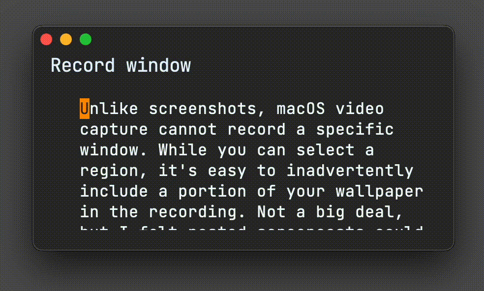
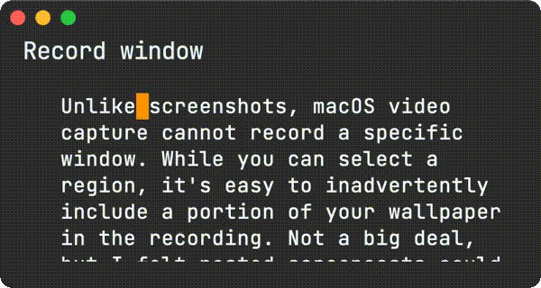
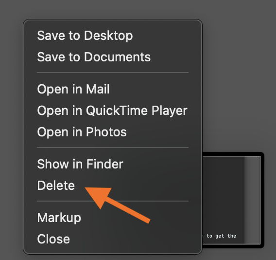
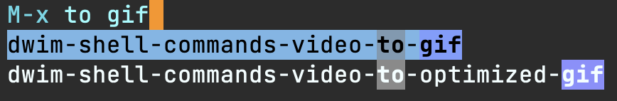
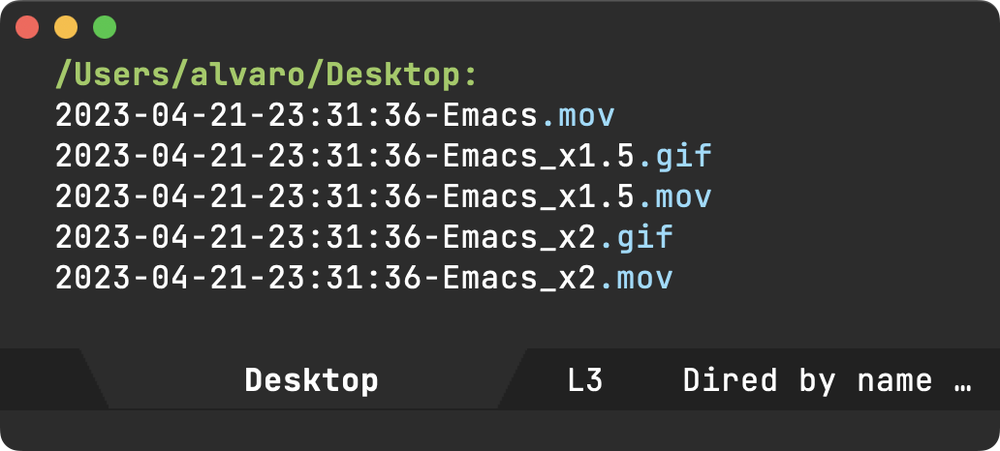

Álvaro Ramírez
Recording and screenshotting windows: the lazy way
While there's no substitution for great written documentation, a quick demo can go a long way in conveying what a tool if capable of doing or what a tip/trick can achieve.
If you've read a handful of my posts, you would have come across either a screenshot or a short clip with some demo. Historically, I've used the macOS's built-in utility invoked via ⌘ + Shift + 5. It does a fine job for screenshots. For video captures, it's got a couple of small quirks.
Record window
Unlike screenshots, macOS video capture cannot record a specific window. While you can select a region, it's easy to inadvertently include a portion of your wallpaper in the recording. Not a big deal, but I felt posted screencasts could look as clean as their screenshot counterparts if we could record the window alone.
Let's compare grabbing a region vs window alone. I know the clean look may be subjective, but see what I mean?

Figure 1: Capture region (includes wallpaper/background)

Figure 2: Capture window only (ahhh, so clean)
Cancel recording
macOS has a handy shortcut (⌘ + Ctrl + Esc) to stop recording. If you got your demo right, you're done. If not, you have one more step remaining (right click to delete the blooper).

Also not a huge deal, but I was hoping for a single shortcut to stop recording and also automatically discard. I haven't found one, but would love to hear if otherwise.
macosrec enters the chat
I wanted more flexibility to build my own recording/screenshotting flows. A command line utility could be quite versatile at that, so I built macosrec.
macosrec enables taking a screenshot or recording a window video entirely from the command line.

elisp glues the world
Command line utilities can be invoked in all sorts of ways, but I'm an Emacs nutter so you can see where this is going… I want Emacs key bindings to control the lot.
| C-c _ | Take screenshot of a window |
| C-c ( | Start recording window |
| C-c ) | Stop recording window |
| C-c 8 | Abort recording |
Integrating command line utilities into Emacs and making them quickly accessible seems to have become a full-time hobby of mine. I kid, but it's become a pretty painless process for me. I built dwim-shell-command for that. If you've never heard of DWIM, it stands for "Do what I mean". To give you an idea of the kinds of things I'm using DWIM commands for, check the following out:
- dwim-shell-commands-audio-to-mp3
- dwim-shell-commands-bin-plist-to-xml
- dwim-shell-commands-clipboard-to-qr
- dwim-shell-commands-drop-video-audio
- dwim-shell-commands-files-combined-size
- dwim-shell-commands-git-clone-clipboard-url
- dwim-shell-commands-git-clone-clipboard-url-to-downloads
- dwim-shell-commands-image-to-grayscale
- dwim-shell-commands-image-to-icns
- dwim-shell-commands-image-to-jpg
- dwim-shell-commands-image-to-png
- dwim-shell-commands-pdf-password-protect
- dwim-shell-commands-reorient-image
- dwim-shell-commands-resize-gif
- dwim-shell-commands-resize-image
- dwim-shell-commands-resize-video
- dwim-shell-commands-speed-up-gif
- dwim-shell-commands-speed-up-video
- dwim-shell-commands-unzip
- dwim-shell-commands-video-to-gif
- dwim-shell-commands-video-to-optimized-gif
- dwim-shell-commands-video-to-webp
If it ever took you a little while to find the right command incantation to get things right, only to forget all about it next time you need it (I'm looking at you ffmpeg), dwim-shell-command can help you easily save things for posterity and make them easily accessible in the future.
Since we're talking ffmpeg, here's all it takes to have gif conversion handy:
(defun dwim-shell-commands-video-to-gif () "Convert all marked videos to gif(s)." (interactive) (dwim-shell-command-on-marked-files "Convert to gif" "ffmpeg -loglevel quiet -stats -y -i '<<f>>' -pix_fmt rgb24 -r 15 '<<fne>>.gif'" :utils "ffmpeg"))
There's no way I'll remember the ffmpeg command, but I can always fuzzy search my trusty commands with something like "to gif" and apply to either the current buffer file or any selected dired files.

So where am I going with this? I wrote DWIM shell commands for the bindings I previously described:
| C-c _ | dwim-shell-commands-macos-screenshot-window |
| C-c ( | dwim-shell-commands-macos-start-recording-window |
| C-c ) | dwim-shell-commands-macos-end-recording-window |
| C-c 8 | dwim-shell-commands-macos-abort-recording-window |
Out of all of commands, dwim-shell-commands-macos-start-recording-window is likely the most interesting one.
(defun dwim-shell-commands-macos-start-recording-window () "Select and start recording a macOS window." (interactive) (let* ((window (dwim-shell-commands--macos-select-window)) (path (dwim-shell-commands--generate-path "~/Desktop" (car window) ".mov")) (buffer-file-name path) ;; override so <<f>> picks it up (inhibit-message t)) (dwim-shell-command-on-marked-files "Start recording a macOS window." (format "# record .mov macosrec --record '%s' --mov --output '<<f>>' # speed .mov up x1.5 ffmpeg -i '<<f>>' -an -filter:v 'setpts=1.5*PTS' '<<fne>>_x1.5.<<e>>' # convert to gif x1.5 ffmpeg -loglevel quiet -stats -y -i '<<fne>>_x1.5.<<e>>' -pix_fmt rgb24 -r 15 '<<fne>>_x1.5.gif' # speed .mov up x2 ffmpeg -i '<<f>>' -an -filter:v 'setpts=2*PTS' '<<fne>>_x2.<<e>>' # convert to gif x2 ffmpeg -loglevel quiet -stats -y -i '<<fne>>_x2.<<e>>' -pix_fmt rgb24 -r 15 '<<fne>>_x2.gif'" (cdr window)) :silent-success t :monitor-directory "~/Desktop" :no-progress t :utils '("ffmpeg" "macosrec"))))
As you likely expect, this command invokes macosrec to start recording a window. The nifty part is that when it's done recording (and saving the .mov file), it automatically creates multiple variants. For starters, it creates x1.5 and x2 .mov videos, but it also generates their .gif counterparts.

Let's recap here for a sec. You start recording a window video with C-c (, end with C-c ), and automagically have all these generated files waiting for you.
You can subsequently inspect any of the video candidates and pick the most appropriate variant. Discard whatever else you don't need.
The output bundle is tailored to my needs. Maybe you want to invoke gifsycle for more optimized versions? Or maybe you want automatic webp generation via ffmpeg? DWIM does that I mean, so you likely have other plans…
dwim-shell-commands-macos-start-recording-window and all other DWIM commands are now included in dwim-shell-commands.el, which ships optionally as part of dwim-shell-command.
macosrec is also on GitHub, but if you want to be on your way, you can install via:
brew tap xenodium/macosrec brew install macosrec
This is my way to record and screenshot windows the lazy way. How would you tweak to make it yours?